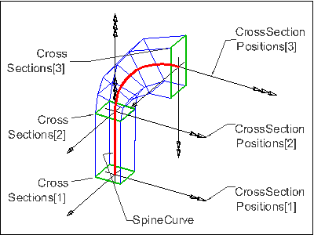
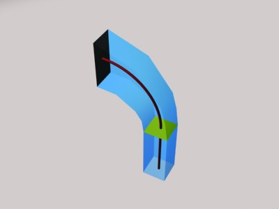

8.8.3.28 IfcSectionedSpine
| Geometrische Achse mit Querschnitten |
An IfcSectionedSpine is a representation of the shape of a three dimensional object composed by a number of
planar cross sections, and a spine curve. The shape is defined between the first element of cross sections and the last
element of the cross sections. A sectioned spine may be used to represent a surface or a solid but the interpolation of
the shape between the cross sections is not defined.
All cross sections have to define areas by a closed profile to allow for the representation of a solid. All cross
sections have to define curves by an open or closed profile to allow for the representation of a surface. The cross
sections are defined by subtypes of IfcProfileDef, where the consecutive profiles may be derived by a
transformation of the start profile or the previous consecutive profile.
The spine curve shall be of type IfcCompositeCurve, each of its segments represented by
IfcCompositeCurveSegment shall correspond to the part between exactly two consecutive cross-sections.
Figure 302 illustrates an example of an IfcSectionedSpine.
- The SpineCurve is given by an IfcCompositeCurve with two Segments. The
Segments[1] has a ParentCurve of type IfcPolyline and a Transition =
CONTSAMEGRADIENT. The Segments[2] has a ParentCurve of type IfcTrimmedCurve and a
Transition = DISCONTINUOUS.
- Each CrossSectionPosition lies at a start or end point of the Segments.
- Each CrossSections are inserted by the CrossSectionPositions. The first two cross sections are of
type IfcRectangleProfileDef, the third is of type IfcDerivedProfileDef.
 |
|
Figure 302 — Sectioned spine geometry
|
Figure 303 illustrates the final result of the IfcSectionedSpine. The body (shown transparently) is not
fully defined by the exchange definition.
 |
|
Figure 303 — Sectioned spine result
|
NOTE Definition according to ISO/CD 10303-42:1992
A sectioned spine is a representation of the shape of a three dimensional object composed of a spine curve and a number
of planar cross sections. The shape is defined between the first element of cross sections and the last element of this
set.
NOTE A sectioned spine may be used to represent a surface or a solid but the interpolation of the shape between
the cross-sections is not defined. For the representation of a solid all cross-sections are closed curves.
NOTE Entity adapted from sectioned_spine defined in ISO
10303-42.
HISTORY New entity in IFC2x.
Informal Propositions:
- none of the cross sections, after being placed by the cross section positions, shall intersect
- none of the cross sections, after being placed by the cross section positions, shall lie in the same plane
- the local origin of each cross section position shall lie at the beginning or end of a composite curve
segment.
XSD Specification:
<xs:element name="IfcSectionedSpine" type="ifc:IfcSectionedSpine" substitutionGroup="ifc:IfcGeometricRepresentationItem" nillable="true"/>
<xs:complexType name="IfcSectionedSpine">
<xs:complexContent>
<xs:extension base="ifc:IfcGeometricRepresentationItem">
<xs:sequence>
<xs:element name="SpineCurve" type="ifc:IfcCompositeCurve" nillable="true"/>
<xs:element name="CrossSections">
<xs:complexType>
<xs:sequence>
<xs:element ref="ifc:IfcProfileDef" minOccurs="2" maxOccurs="unbounded"/>
</xs:sequence>
<xs:attribute ref="ifc:itemType" fixed="ifc:IfcProfileDef"/>
<xs:attribute ref="ifc:cType" fixed="list"/>
<xs:attribute ref="ifc:arraySize" use="optional"/>
</xs:complexType>
</xs:element>
<xs:element name="CrossSectionPositions">
<xs:complexType>
<xs:sequence>
<xs:element ref="ifc:IfcAxis2Placement3D" minOccurs="2" maxOccurs="unbounded"/>
</xs:sequence>
<xs:attribute ref="ifc:itemType" fixed="ifc:IfcAxis2Placement3D"/>
<xs:attribute ref="ifc:cType" fixed="list"/>
<xs:attribute ref="ifc:arraySize" use="optional"/>
</xs:complexType>
</xs:element>
</xs:sequence>
</xs:extension>
</xs:complexContent>
</xs:complexType>
EXPRESS Specification:
|
|
| CorrespondingSectionPositions | : | SIZEOF(CrossSections) = SIZEOF(CrossSectionPositions); | | ConsistentProfileTypes | : | SIZEOF(QUERY(temp <* CrossSections | CrossSections[1].ProfileType <> temp.ProfileType)) = 0; | | SpineCurveDim | : | SpineCurve.Dim = 3; |
|
 EXPRESS-G diagram
EXPRESS-G diagram
Attribute Definitions:
| SpineCurve | : | A single composite curve, that defines the spine curve. Each of the composite curve segments correspond to the part between two cross-sections. |
| CrossSections | : | A list of at least two cross sections, each defined within the xy plane of the position coordinate system of the cross section. The position coordinate system is given by the corresponding list CrossSectionPositions. |
| CrossSectionPositions | : | Position coordinate systems for the cross sections that form the sectioned spine. The profiles defining the cross sections are positioned within the xy plane of the corresponding position coordinate system. |
| Dim | : | The dimensionality of the spine curve is always 3. |
Formal Propositions:
| CorrespondingSectionPositions | : | The set of cross sections and the set of cross section positions shall be of the same size. |
| ConsistentProfileTypes | : | The profile type (either AREA or CURVE) shall be consistent within the list of the profiles defining the cross sections. |
| SpineCurveDim | : | The curve entity which is the underlying spine curve shall have the dimensionality of 3. |
Inheritance Graph:
 Link to this page
Link to this page